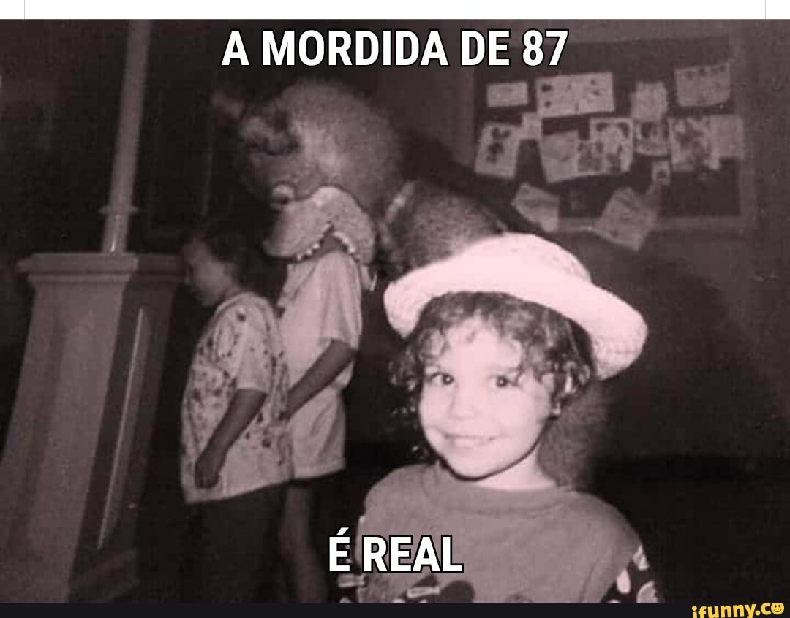

Freddy's é um restaurante familiar
A mordida de '87 foi um incidente que ocorreu em 1987, no restaurante Freddy Fazbear's Pizza. Este foi um evento em que um animatrônico violentamente mordeu um cliente na cabeça.
Os detalhes não são dados, mas o ataque supostamente causou a perda do lobo frontal do cérebro da vítima. 